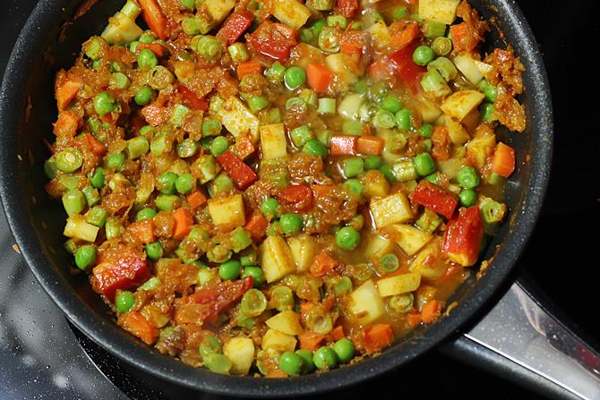
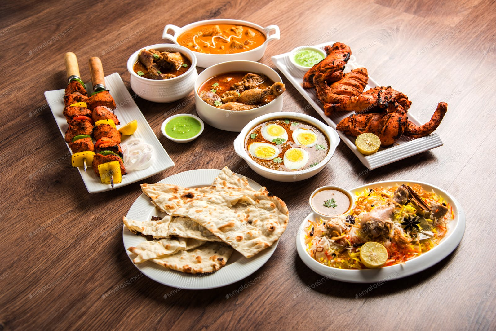
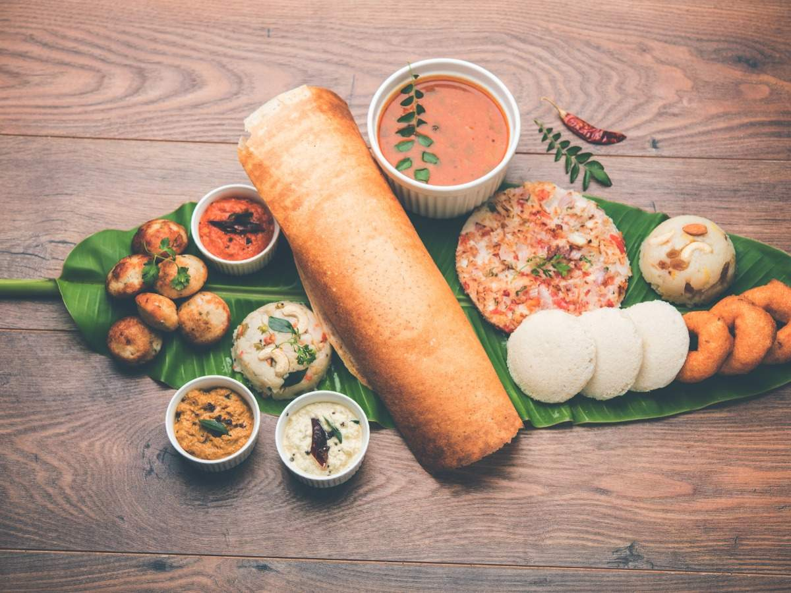

Vegetarian diets offer a number of nutritional benefits, including lower levels of saturated fat, cholesterol and
higher levels of carbohydrates, dietary fiber, magnesium, potassium, folate and antioxidants
such as vitamins C and E and phytochemicals.
Click here for Vegeterain Food Recipe

A non-vegetarian diet includes chicken, meat, eggs and fish. A non-vegetarian diet also has several health benefits
because this type of food is rich in protein and vitamin B. Non-vegetarian food strengthens our muscles and helps them
grow faster. It also helps to maintain body stamina and hemoglobin.
Click here for Non-vegeterain Food Recipe
These basic ingredients for baking a cake are; flour, eggs, fat (usually butter), sugar, salt,
a form of liquid (usually milk), and leavening agents (such as baking soda). There are various
types of cakes.
Click here Cake Recipe

Chinese vegetables include Chinese cabbage, bok choy, mustard greens, winter radish, snow peas, yard-long beans,
and varieties of melons, eggplant and cucumbers, among others. These vegetables are becoming more familiar to an
increasingly diverse population and the popularity of ethnic foods.
Click here for Chinese Recipe

The southern part of India is famous for its various spices and also spicy foods. South Indian Fast food has had
impact of foreign as well as native rulers. As south India is hot and lies on the beach areas of the nation,
therefore dishes here are such that goes well with the climate conditions here.
Click here South Indian Food Recipe

The fastest form of "fast food" consists of pre-cooked meals kept in readiness for a customer's arrival.
wide variety of food can be "cooked fast", "fast food" is a commercial term-limited to food sold in a restaurant or
store with frozen, preheated or precooked ingredients and served to the customer in a packaged form for take-out/take-away.
Click here for Fast Food Recipe